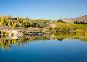

Central Otago
A harsh yet compelling land, Central Otago is New Zealand’s Hottest (37 degrees +) and driest spot in the summer. From sun burnt hills and rocky outcrops to the oasis of the clear blue lakes which dot the landscape, you will be enthralled with this beautiful region.
Initially used for grazing sheep, Central Otago soon became the destination of many a fortune seeker when gold was first discovered in 1861. Today, Central Otago’s economy centres around farming, fruit growing and Tourism. The largest town in the region, Alexandra, is a wonderful place to visit in any season. Visitors in the hot summer can enjoy a dip in nearby Lake Dunstan or a taste of some of the local wines. Autumn turns Alexandra’s deciduous trees into a sea of Gold while the long, cold Winter offers big-sky, crisp-clear days. The quaint settlement of Clyde largely remains unchanged from the gold rush years and is the closest you’ll get to experience what life was like back in the 1860’s. Located at the head of the Maniototo Plain, Naseby is the most charming of Otago's gold rush settlements, with a wealth of surviving Victorian architecture. Set on the shores of beautiful Lake Dunstan, Cromwell is another famous gold mining town and is characterised by several rather large pieces of fruit, which stand proudly on a pole reflecting the area’s fruit growing prowess.